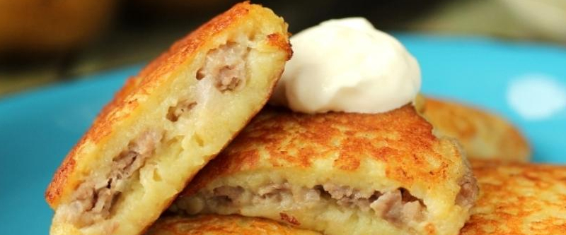

приготовление:
-
Для фарша: взять любое мясо, добавить луковицу, измельченную на терке. Посолить, поперчить, добавить, перемешать.
-
Для картофельной части: почистить картошку, репчатый лук. Измельчить все в комбайне. Добавить яйцо, соль, перец, укроп сушеный, так же 2-3 ст.л. муки. Перемешать.
-
Приготовление: разогреть сковороду, налить масло на сковороду, дать нагреться, уменьшить огонь. Положить нижнюю картофельную часть драника, сформировать мокрыми руками из фарша котлетки плоские, выложить их на картофельую часть, покрыть сверху тоже картофельной частью. Обжаривать на среднем огне до зарумянивания края (около 10 минут), потом перевернуть и еще столько же обжаривать. Если не выглядят полностью готовыми, то можно еще раз перевернуть и 5 минут подержать под крышкой.
-
Подавать со сметаной.